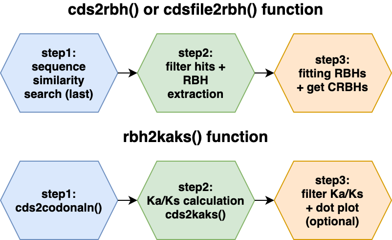
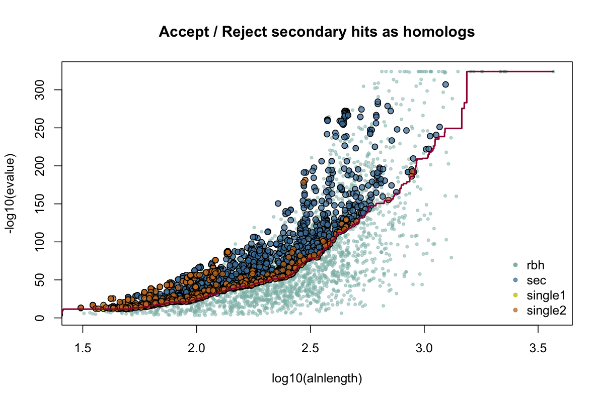
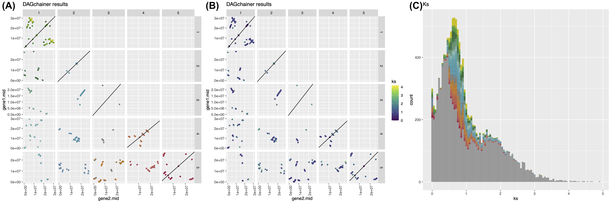

CRBHits is a coding sequence (CDS) analysis pipeline in R [@team2013r]. It reimplements the Conditional Reciprocal Best Hit (CRBH) algorithm crb-blast and covers all necessary steps from sequence similarity searches, codon alignments to Ka/Ks calculations and synteny. The new R package targets ecology, population and evolutionary biologists working in the field of comparative genomics.
The Reciprocal Best Hit (RBH) approach is commonly used in bioinformatics to show that two sequences evolved from a common ancestral gene. In other words, RBH tries to find orthologous protein sequences within and between species. These orthologous sequences can be further analysed to evaluate protein family evolution, infer phylogenetic trees and to annotate protein function [@altenhoff2019inferring]. The initial sequence search step is classically performed with the Basic Local Alignment Search Tool (blast) [@altschul1990basic] and due to evolutionary constraints, in most cases protein coding sequences are compared between two species. Downstream analysis use the resulting RBH to cluster sequence pairs and build so-called orthologous groups like e.g. OrthoFinder [@emms2015orthofinder] and other tools.
The CRBH algorithm was introduced by @aubry2014deep and builds upon the traditional RBH approach to find additional orthologous sequences between two sets of sequences. As described earlier [@aubry2014deep; @scott2017shmlast], CRBH uses the sequence search results to fit an expect value (E-value) cutoff given each RBH to subsequently add sequence pairs to the list of bona-fide orthologs given their alignment length.
Unfortunately, as mentioned by @scott2017shmlast, the original implementation of CRBH (crb-blast) lag improved blast-like search algorithm to speed up the analysis. As a consequence, @scott2017shmlast ported CRBH to python shmlast, while shmlast cannot deal with IUPAC nucleotide code so far.
CRBHits constitutes a new R package, which build upon previous implementations and ports CRBH into the R environment, which is popular among biologists. CRBHits improve CRBH by additional implemented filter steps [@rost1999twilight] and the possibility to apply custom filters prior E-value fitting. Further, the resulting CRBH pairs can be evaluated for the presence of tandem duplicated genes, gene order based syntenic groups and evolutionary rates.

Coding sequence analysis and synteny
Calculating synonymous (Ks) and nonsynonymous substitutions (Ka) per orthologous sequence pair is a common task for evolutionary biologists, since its ratio Ka/Ks can be used as an indicator of selective pressure acting on a protein [@kryazhimskiy2008population]. However, this task is computational more demanding and consist of at least two steps, namely codon sequence alignment creation and Ka/Ks calculation. Further, the codon sequence alignment step consist of three subtasks, namely coding nucleotide to protein sequence translation, pairwise protein sequence alignment calculation and converting the protein sequence alignment back into a codon based alignment.
Downstream of CRBH creation, CRBHits features all above mentioned steps and subtasks. CRBHits has the ability to directly create codon alignments within R with the help of the widely used R package Biostrings [@pages2017biostrings] (more than 200k downloads per year since 2014). These codon alignments can be subsequently used to calculate synonymous and nonsynonymous substitutions per sequence pair and is implemented in a multithreaded fashion either via the R package seqinr [@charif2007seqinr] or the use of an R external tool KaKs_Calculator2.0 [@wang2010kaks_calculator].
As gene duplication is one driving force in evolution [@ohno1970evolution], the classification of genes as duplicates is one important step to provide us with insights into the molecular events responsible for the current genome architecture of species [@haas2004]. New long-read sequencing technology make more and more chromosome scale assemblies for model and non-model species available. The resulting chromosomal gene order information can be used with sequence similarity scores to classify genes into different types of duplication events, like tandem duplicates or chromosomal segments (syntenic regions) derived from e.g. whole-genome duplication. CRBHits features this classification step via the integration of the R external tool DAGchainer [@haas2004] and offers the possibility to directly link it with evolutionary rate estimations (see ).
Implementation
Like shmlast, CRBHits benefits from the blast-like sequence search software LAST[@kielbasa2011adaptive] and plots the fitted model of the CRBH E-value based algorithm. In addition, users can filter the hit pairs prior to CRBH fitting for other criteria like query coverage, protein identity and/or the twilight zone of protein sequence alignments according to @rost1999twilight. The implemented filter uses equation 2 [see @rost1999twilight]:
where is the expected protein identity given the alignment length . If the actual protein identity of a hit pair exceeds the expected protein identity (), it is retained for subsequent CRBH calculation.
In contrast to previous implementations, CRBHits only take coding nucleotide sequences (CDS) as the query and target inputs. This is due to the downstream functionality of CRBHits to directly calculate codon alignments within R, which rely on CDS. The inputs are translated into protein sequences, aligned globally [@smith1981identification] and converted into codon alignments.
Functions are completely coded in R and only the external prerequisites (LAST, KaKs_Calculator2.0 and DAGchainer) need to be compiled. However, all of them are forked within CRBHits and can be easily build with the dedicated R functions make_last(), make_KaKs_Calculator2() and make_dagchainer(). Further, users can create their own RBH filters before CRBH calculation.
Functions and Examples
The following example shows how to obtain CRBHit pairs between the coding sequences of Schizosaccharomyces pombe (fission yeast) [@wood2012pombase] and Nematostella vectensis (starlet sea anemone) [@apweiler2004protein] by using two URLs as input strings and multiple threads for calculation.
library(CRBHits)
#set URLs for Schizosaccharomyces pombe (fission yeast)
#and Nematostella vectensis (starlet sea anemone) from NCBI Genomes
cds1.url <- paste0("https://ftp.ncbi.nlm.nih.gov/genomes/all/GCF/000/002/945/",
"GCF_000002945.1_ASM294v2/",
"GCF_000002945.1_ASM294v2_cds_from_genomic.fna.gz")
cds2.url <- paste0("https://ftp.ncbi.nlm.nih.gov/genomes/all/GCF/000/209/225/",
"GCF_000209225.1_ASM20922v1/",
"GCF_000209225.1_ASM20922v1_cds_from_genomic.fna.gz")
#calculate CBRBhit pairs
cds1.cds2.crbh <- cdsfile2rbh(cds1.url, cds2.url, longest.isoform = TRUE,
isoform.source = "NCBI", plotCurve = TRUE,
threads = 8)
#get help ?cdsfile2rbh
The obtained CRBHit pairs can also be used to calculate synonymous (Ks) and nonsynonymous (Ka) substitutions per hit pair using either the model from @li1993unbiased or from @yang2000estimating.
#download and simultaneously get longest isoform for
#Schizosaccharomyces pombe (fission yeast) and
#Nematostella vectensis (starlet sea anemone)
cds1 <- isoform2longest(Biostrings::readDNAStringSet(cds1.url))
cds2 <- isoform2longest(Biostrings::readDNAStringSet(cds2.url))
#calculate Ka/Ks values for each CRBHit pair
cds1.cds2.kaks.Li <- rbh2kaks(cds1.cds2.crbh, cds1, cds2,
model = "Li", threads = 8)
cds1.cds2.kaks.YN <- rbh2kaks(cds1.cds2.crbh, cds1, cds2,
model = "YN", threads = 8)
#get help ?rbh2kaksGiven the annotated chromosomal gene positions it is also possible to assign tandem duplicated genes per chromosome and directly compute chains of syntenic genes via the use of the R external tool DAGchainer[@haas2004]. Here, Arabidopsis thaliana is compared to itself (so called selfblast) and syntenic groups vsiualized by their Ks values.
#download and simultaneously get longest isoform for
#Arabidopsis thaliana
cds3.url <- paste0("ftp://ftp.ensemblgenomes.org/pub/plants/release-48/fasta/",
"arabidopsis_thaliana/cds/",
"Arabidopsis_thaliana.TAIR10.cds.all.fa.gz")
cds3 <- isoform2longest(Biostrings::readDNAStringSet(cds3.url), "ENSEMBL")
#extract gene position and chromosomal gene order
cds3.genepos <- cds2genepos(cds3, source = "ENSEMBL")
#calculate CBRBhit pairs
cds3.selfblast.crbh <- cds2rbh(cds3, cds3, longest.isoform = TRUE,
qcov = 0.5, rost1999 = TRUE,
isoform.source = "ENSEMBL", plotCurve = TRUE,
threads = 8)
#compute chains of syntenic genes and plot chr1, chr2, chr3, chr4, chr5
cds3.selfblast.synteny <- rbh2dagchainer(cds3.selfblast.crbh,
cds3.genepos, cds3.genepos,
plotDotPlot = TRUE,
select.chr = c("1", "2", "3", "4", "5"))
#calculate Ka/Ks values for each CRBHit pair
cds3.selfblast.kaks.Li <- rbh2kaks(cds3.selfblast.crbh, cds3, cds3,
model = "Li", threads = 8)
#get help ?rbh2dagchainer
#get help ?plot.dagchainer
#get help ?plot.kaks
| Number of Threads | 1 | 2 | 4 | 8 |
|---|---|---|---|---|
| Runtime of CRBH(shmlast v1.6) in sec | 36 (s) | 24 (s) | 18 (s) | 16 (s) |
| Runtime of CRBH(CRBHits) in sec | 18 (s) | 10 (s) | 7 (s) | 6 (s) |
| Runtime of kaks.Li in sec | 586 (s) | 327 (s) | 190 (s) | 128 (s) |
| Runtime of kaks.YN in sec | 667 (s) | 361 (s) | 202 (s) | 133 (s) |
Conclusions
CRBHits implements CRBH in R (see ), can be used to calculate codon alignment based nucleotide diversities (Ka/Ks) and synteny, in a multithreaded fashion (see ).
Availability
CRBHits is an open source software made available under the MIT license. It can be installed from its gitlab repository using the devtools package.
devtools::install_gitlab("mpievolbio-it/crbhits",
host = "https://gitlab.gwdg.de")", build_vignettes = TRUE)The R package website, which contain a detailed HOWTO to install the prerequisites (mentioned above) and package vignettes are availbale at https://mpievolbio-it.pages.gwdg.de/crbhits.